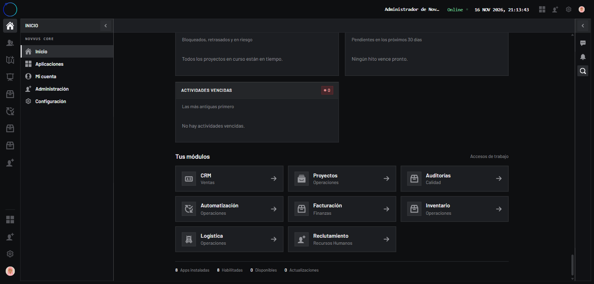
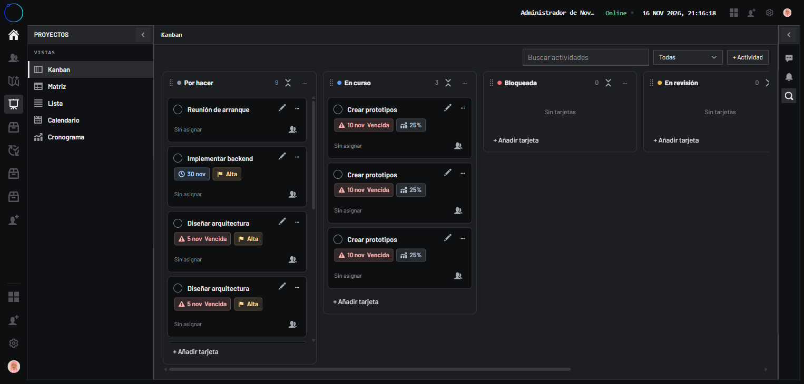
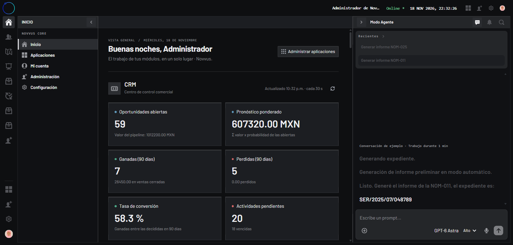
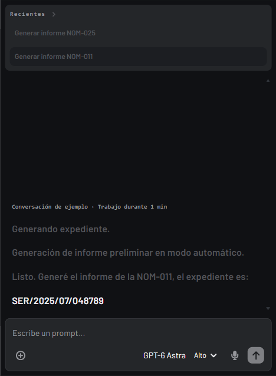
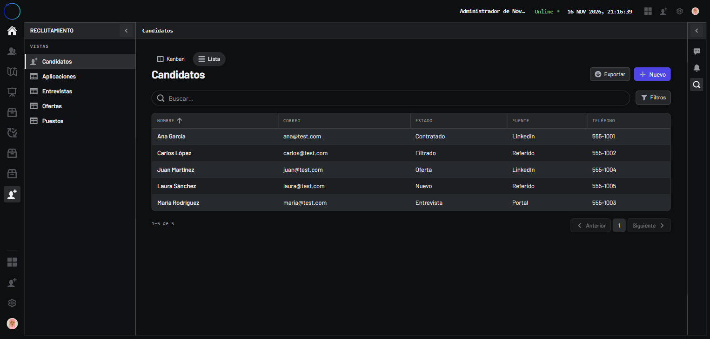

Business SuiteCómo funciona Novvus
Qué es, con qué está construido y cómo se comunican sus módulos. Un recorrido desde el problema hasta la factura emitida, con capturas del sistema en operación.
Ocho módulos sobre un núcleo común
Una suite empresarial modular: una sola sesión, un solo modelo de permisos y una sola base de datos para ventas, proyectos, operaciones, finanzas y talento.
Módulos de negocio
CRM, Proyectos, Reclutamiento, Logística, Auditorías, Facturación, Inventario y Automatización.
Tablas en la base
Un esquema compartido y un esquema independiente por módulo, con aislamiento por organización.
Punto de acceso
El usuario entra por el navegador a un único dominio; no instala nada ni conoce los servicios internos.
Datos dispersos y captura duplicada
El costo no está en tener más funciones, sino en que el mismo dato se capture varias veces y nadie pueda reconstruir qué pasó.
Lo que pasa hoy
- Una herramienta por área. Ventas en un CRM, proyectos en hojas de cálculo, facturas en otro sistema.
- El dato se captura dos veces. Al cerrar una venta alguien vuelve a escribir el cliente, el importe y la fecha.
- Nadie sabe qué pasó. Cuando un registro aparece mal, no hay rastro de quién lo creó ni por qué.
- Permisos dispersos. Cada herramienta decide por su cuenta quién ve qué.
Lo que propone Novvus
- Una suite modular. Ocho aplicaciones con la misma sesión, el mismo menú y el mismo estilo.
- Un dueño por dato. El cliente vive en el CRM; los demás módulos lo leen, no lo copian.
- Hechos que se anuncian. Cada cambio relevante se publica como evento y queda auditado.
- Permisos centralizados. El núcleo autoriza cada operación con la misma regla para todos.
Núcleo y módulos: responsabilidades separadas
Lo transversal
- Inicio de sesión y renovación del token.
- Permisos por rol, recurso y operación.
- Enrutamiento firmado hacia cada módulo.
- Bus de eventos y bitácora de auditoría.
- Archivos adjuntos y cuotas.
Lo del dominio
- Modelos y reglas de su área.
- Vistas, etiquetas y formularios.
- Migraciones de su propio esquema.
- Suscripción a los eventos que le importan.
- Nada de autenticación ni de permisos.
Catálogo de módulos
CRM
Empresas, contactos, oportunidades, cotizaciones y actividades.
Proyectos
Portafolio, fases, tareas, hitos, entregables y riesgos.
Reclutamiento
Puestos, candidatos, entrevistas, ofertas y contratación.
Logística
Almacenes, transportistas, envíos y órdenes de entrega.
Auditorías
Auditorías, listas de verificación, hallazgos e informes.
Facturación
Facturas, líneas, pagos y control de saldos.
Inventario
Productos, existencias por almacén y movimientos.
Automatización
Procesos, pasos, ejecuciones, registros y avisos.
Una interfaz común

- Una sesión. El mismo usuario entra a ventas, proyectos o facturación sin volver a identificarse.
- Un panel. Los indicadores de cada módulo se suman en la portada: oportunidades, proyectos, facturas, envíos.
- Un menú. Se arma con los manifiestos instalados: si un módulo no está, no aparece.
- Un permiso. Cada cuenta ve solo los módulos que su rol autoriza.
Capas y límites de confianza
Cada paso es un límite que ninguna otra capa puede saltarse: el navegador nunca toca la base y los módulos no son alcanzables desde fuera. Por eso agregar un módulo no obliga a tocar ni la web ni el kernel.
Ciclo de una petición
Navegador
Pide una vista a la capa web en el puerto 8077.
Web
Llama a /api/módulo con el token del usuario.
Kernel
Valida el token y el permiso; resuelve a qué módulo va.
Módulo
Recibe la llamada firmada, con la organización en contexto.
Base
Consulta su esquema con RLS: solo ve su organización.
Auditoría
El kernel registra la operación y devuelve la respuesta.
Nada se salta
El módulo no recibe llamadas del navegador: solo del kernel, por la red interna.
Permiso antes que datos
Si el rol no tiene la operación, la petición no llega al módulo.
Todo queda escrito
Cada operación deja rastro: quién, cuándo, sobre qué registro.
Componentes de la plataforma
Rust
Servicio novvus_gateway. Seguridad, concurrencia y un solo punto de autorización.
Next.js
Node 22. Renderiza las vistas y hace de proxy hacia el kernel.
Python 3.12
FastAPI, SQLAlchemy 2 y Pydantic sobre uvicorn. API generada por el SDK.
PostgreSQL 16
Transacciones, políticas RLS y un esquema mod_* por módulo.
Docker
Once contenedores sobre WSL2, con versiones fijadas y un solo comando.
- Un SDK propio. novvus-sdk 0.1.0 convierte modelos y permisos en API, validaciones y migraciones.
- Versiones fijadas. Kernel y web se consumen como imágenes 0.3.72; los módulos declaran su versión en el manifiesto.
- Sin servicios de pago. Diagramas con Mermaid, documentos con HTML y el motor de impresión del navegador.
Requisitos de instalación
El usuario final no instala nada; el servidor concentra Docker, los datos y los respaldos. Lo que cambia entre demo, desarrollo y producción son los secretos y el origen de los datos.
Solo navegador
- Chrome, Edge o Brave: cualquiera basado en Chromium.
- Nada que instalar ni configurar en el equipo.
- Entra por el puerto publicado: 8077 en la demo.
- No abre puertos de módulos ni de base.
Un equipo con WSL2
- Windows 10/11 con WSL2 y una distribución Ubuntu.
- Docker Engine 24 o superior dentro de WSL; no Docker Desktop.
- 8 GB de RAM y 4 GB libres en disco.
- Acceso a ghcr.io/novvus para las imágenes del núcleo.
- Código y editor; Python 3.12 y Node 22 si se prueba fuera de contenedores.
Servidor y operación
- Servidor con Docker Engine 24+ y TLS en el borde.
- Secretos regenerados; no los del ambiente demo.
- Respaldos automáticos fuera del servidor.
- Monitoreo de salud con alertas.
- SSO o directorio corporativo, con roles revisados.
- Restauración completa probada antes de migrar.
Puesta en marcha
Todo ocurre en WSL, dentro de /opt/novvus. La misma composición sirve para demo y producción; cambian los secretos y el origen de los datos.
Sistema
WSL2 con Ubuntu y Docker Engine 24 o superior.
Directorio
Copiar docker/ a /opt/novvus y los módulos base.
Entorno
Revisar .env; en producción, regenerar cada secreto.
Base
Levantar PostgreSQL; en demo, restaurar el respaldo.
Plataforma
up -d: el bootstrap aplica las migraciones pendientes.
Módulos
Construir el runtime, ejecutar run-modulos.sh y abrir :8077.
PKG=/mnt/c/Users/<usuario>/Desktop/Novvus-Sistema
sudo mkdir -p /opt/novvus
sudo cp -r $PKG/docker/. /opt/novvus/
sudo cp -r /opt/novvus/modules-base/. /opt/novvus/modules/
cd /opt/novvus
# demo: restaurar el respaldo incluido (producción: base vacía)
docker compose -f docker-compose.yml -f modules.compose.yml up -d postgres
docker exec -i novvus-prod-postgres-1 pg_restore -U novvus -d novvus \
--clean --if-exists --no-owner < novvus_demo.dump
docker compose -f docker-compose.yml -f modules.compose.yml up -d
docker build -f $PKG/codigo/Dockerfile.modulo -t novvus-runtime:local $PKG/codigo
IMAGE=novvus-runtime:local CODE=$PKG/codigo/modules bash /opt/novvus/run-modulos.sh
El pg_restore es solo para la demo. En producción se arranca con la base vacía y el bootstrap aplica las migraciones.
Seguridad centralizada
- Token JWT. Vida corta, renovación por dispositivo y cierre de sesión que invalida el refresco.
- Permisos por operación. La forma es módulo.recurso.operación: leer, escribir, administrar.
- Aislamiento por organización. Todas las tablas llevan org_id y una política RLS que filtra cada consulta.
- Llamadas firmadas. El kernel reenvía a los módulos con HMAC: aunque alguien alcance la red interna, no puede falsificar el origen.
- Bitácora. Cada operación relevante queda registrada con usuario, recurso y momento.

Esquema de la base de datos
Cada entidad tiene un módulo dueño y un esquema propio. Las relaciones son llaves foráneas: no quedan facturas sin cotización ni pagos sin factura.
El tablero, las listas y los reportes se apoyan en las mismas tablas: un indicador no se calcula dos veces con criterios distintos.
Recorrido por la aplicación
Pantallas del sistema en operación, desde la oportunidad hasta la factura emitida.
Inicio de sesión

- Credenciales de demostración. Ocho cuentas, una por rol: ventas, proyectos, logística, recursos humanos, auditoría, automatización y administración.
- La sesión es un token. Viaja en cada petición y se renueva sin pedir la contraseña otra vez.
- Un solo dominio. El usuario nunca ve los puertos internos ni la base de datos.
Menú según módulos instalados

- Nada se programa a mano. Las tarjetas, el menú lateral y el buscador salen de los manifiestos instalados.
- Cada módulo se identifica. Nombre, categoría, icono y color de acento los declara el propio módulo.
- El rol filtra la vista. Una cuenta de ventas no ve Administración; una de auditoría no ve Facturación.
- Estado real. «8 apps instaladas, 8 habilitadas»: el contador lo calcula la plataforma, no una hoja de cálculo.
Oportunidades comerciales

- La empresa es la raíz. Contactos, oportunidades y actividades cuelgan del mismo registro.
- Etapas visibles. Cada oportunidad avanza por el pipeline con su importe y su probabilidad.
- Nombres, no identificadores. Las listas muestran cliente y folio; nunca un UUID.
- El siguiente paso es cotizar. La cotización hereda cliente, líneas e impuestos.
Aceptación de una cotización

- El usuario solo cambia el estado a «Aceptada» y confirma.
- El CRM publica un hecho: crm.quote.accepted con los identificadores necesarios.
- No llama a nadie. No sabe quién escucha ni cuántos módulos reaccionarán.
- El resto ocurre en milisegundos: envío, factura, proyecto y ejecución.
Registros generados por eventos



Los tres registros comparten la misma cotización de origen. Esa coincidencia es la prueba de que el mecanismo funcionó: un hecho, tres consecuencias y cero capturas manuales.
La referencia no es un número al azar: se deriva del identificador de la cotización para que el enlace sea estable aunque el evento llegue dos veces.
Ejecución y bitácora


Procesos
Reglas declaradas: qué evento escuchan y qué pasos ejecutan.
Pasos tipados
Consultar, obtener un registro, enviar correo o notificar.
Trazabilidad
Si un paso falla, la corrida se detiene y dice exactamente dónde.
Modo Agente
El panel derecho suma un modo agente: recibe instrucciones en lenguaje natural y trabaja sobre los datos de la organización, con la misma sesión y los mismos permisos.
El contexto
Expedientes, órdenes, clientes y auditorías del mismo ambiente.
Herramientas
Genera documentos y encadena pasos del flujo; no solo responde texto.
Supervisión
Propone y ejecuta; aprobar y firmar sigue siendo una decisión humana.

Informe NOM-011
Se pide el informe de la NOM-011 y el agente encadena el expediente, el informe preliminar y los avisos. El folio queda ligado al servicio.
Instrucción
«Generar informe NOM-011», escrito en el cuadro de mensaje.
Expediente
«Generando expediente.» Abre el expediente del servicio.
Informe
«Generación de informe preliminar en modo automático.»
Folio
SER/2025/07/048789, ligado al expediente.
Avisos
Notifica al responsable: faltan datos, informe generado, expediente actualizado.
Revisión
La aprobación del informe la firma una persona.

Reclutamiento, auditorías e inventario



Cada módulo repite el mismo patrón: una entidad propia, permisos declarados y eventos que conectan con el resto. Reclutamiento alimenta al CRM; Auditorías avisa al responsable; Inventario reacciona a la logística.
Eventos entre módulos

- Se publica un hecho. El nombre describe el negocio: crm.quote.accepted, logistica.shipment.delivered.
- El kernel distribuye. Cada módulo suscrito reacciona por su cuenta, sin que el emisor lo conozca.
- Se pide con permiso. Si un módulo necesita leer datos de otro, usa su API con un permiso de servicio declarado.
- Nadie escribe fuera. Un módulo jamás toca el esquema de otro: esa es la regla que evita el acoplamiento.
Eventos repetidos
Llega el evento
crm.quote.accepted de la cotización 8C7E.
Se marca
El módulo intenta registrar la clave en _processed_events.
¿Ya existía?
Si la clave está, la ejecución termina sin crear nada.
Si es nuevo
Crea el registro con una clave de negocio estable: ENV-COT-8C7E.
Factura creada
Una factura, un envío y un proyecto. La cotización queda vinculada a los tres.
Omitida
El evento se marca como ya procesado y la corrida lo registra. Nada se duplica.
Se probó publicando el mismo evento dos veces: la cotización produjo un único envío y el segundo intento quedó como omitido en la bitácora.
Estructura de un módulo
[module] id = "facturacion" name = "Facturación" version = "0.1.0" [dependencies] modules = ["crm>=0.1"] service_permissions = [ "crm.quotes.read", ] [events] emits = ["facturacion.invoice.created"] listens = ["crm.quote.accepted"] [runtime] port = 8180
class Invoice(NovvusModel):
__resource__ = "invoices"
number: Mapped[str]
company_id: Mapped[UUID | None]
status: Mapped[InvoiceStatus]
total: Mapped[Decimal]
paid_amount: Mapped[Decimal]
# tablas, columnas y tipos
# generan la API y las
# migraciones del módulo
module = NovvusModule("novvus.toml")
for m in ALL_MODELS:
module.model(m)
@module.on("crm.quote.accepted")
async def on_quote_accepted(event, session):
if await ya_procesado(session, event):
return # idempotencia
inv = Invoice(...)
session.add(inv)
await module.emit(
"facturacion.invoice.created", ...)
app = module.create_app()
Incorporación de un módulo
Publica la imagen
El módulo se distribuye como contenedor con su manifiesto y variables.
Registra el manifiesto
Nombre, versión, recursos, vistas y eventos que publica.
Otorga permisos
Solo los recursos declarados quedan accesibles para ese módulo.
Verifica
Salud, migraciones aplicadas y menú visible para los roles autorizados.
- Sin recompilar. Ni la capa web ni el kernel cambian: el menú y las vistas salen del manifiesto.
- Sin acoplamiento. Si el módulo se retira, sus tablas quedan y el resto sigue operando.
- Mismo contrato. Permisos, eventos y estilo idénticos a los ocho módulos existentes.
# el módulo se suma al compose docker compose up -d # y responde salud como los demás curl :8140/health 200 OK
Resultados de la entrega
- Los ocho módulos responden /health con 200.
- Aceptar una cotización crea envío y factura una sola vez.
- Repetir el evento no duplica registros.
- Nueve vistas principales cargan con datos legibles.
- La exportación descarga las columnas visibles.
- El aislamiento devuelve cero filas de otra organización.